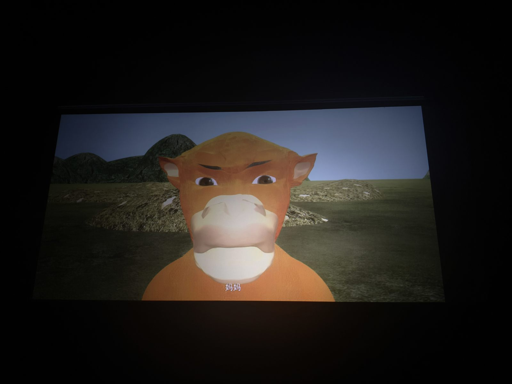

牛来影评
这个电影要是一个人在家看盗版，或者去人少的场次，就是纯0分电影。粗糙的制作，大量不知所云的运镜，毫无新意的剧情，可能就只能图一乐。
但是如果是去人多的场次看，将牛来看作一部超越电影本身的喜剧，我作为e人觉得可以给到8分。之前看过很多国产喜剧，充满烂俗下三路的梗，实在让我看得头疼。但是牛来的喜剧性不在烂梗或者滑稽的剧情里，它无意或者创新性地将其放在了建模，配音，以及很多电影外的地方。在牛来的影厅里，一群陌生人聚在一起，开心地互相交流，一起开怀大笑，一起盗摄，甚至有人会跟影片角色的台词实时互动，最终在电影结尾一起由衷地鼓掌，这完全是看正常电影体验不到的东西，影厅里的观众也成为了牛来的一部分。我反正看完后觉得这30块钱值了，它带给我的快乐远超票价。
